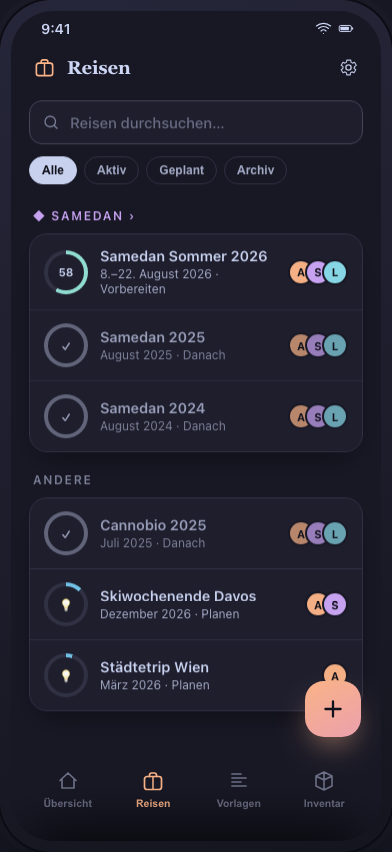
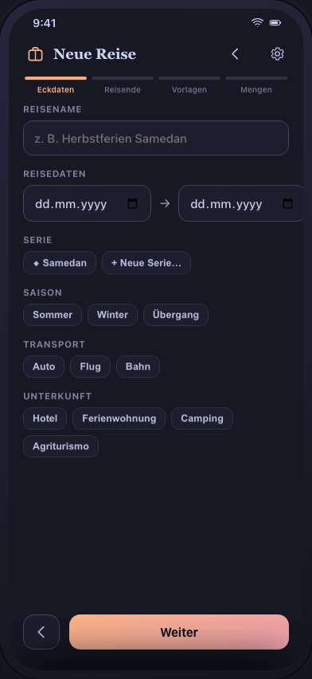
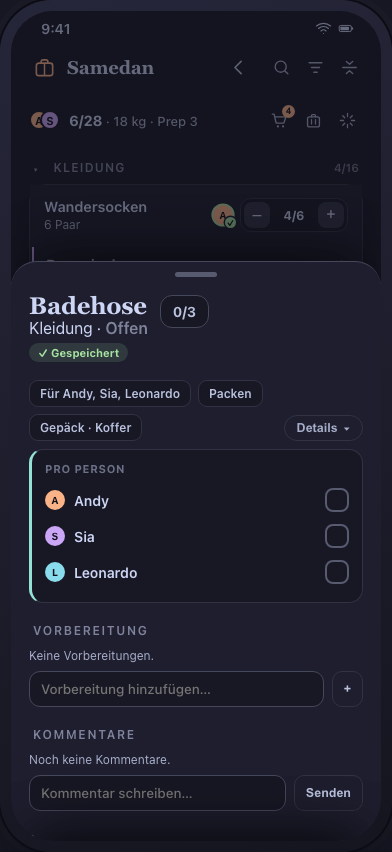
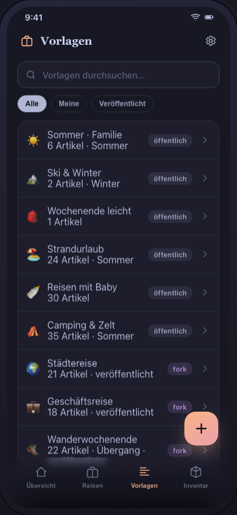
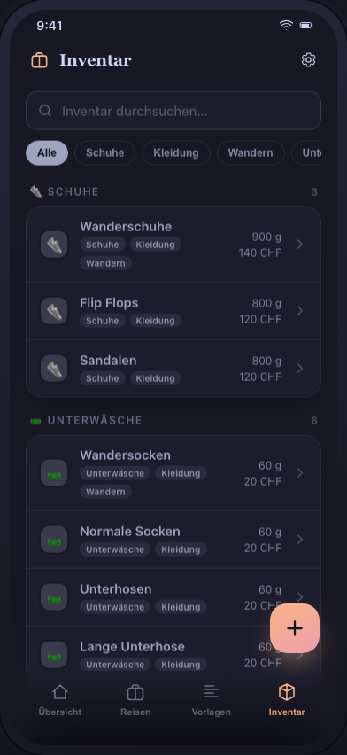
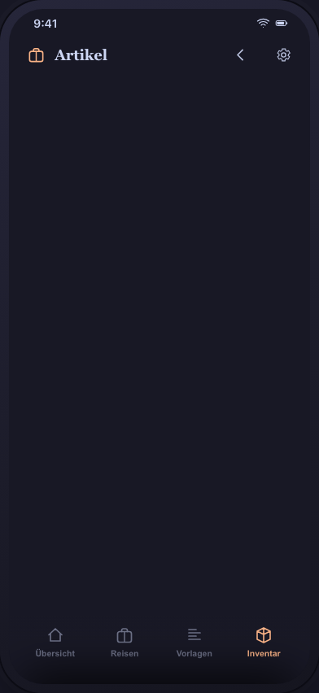
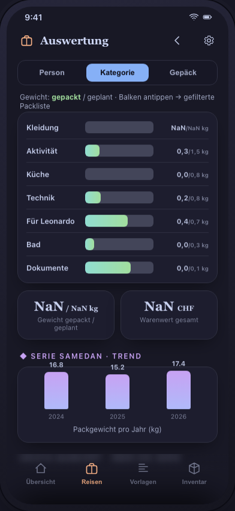

JIT-Pack · UI-Konzept · Stand 08.08.2026
Masken-Übersicht — was ist testbar?
Alle Screens der UI-Spec (M1–M20) und ihr Stand im anklickbaren Konzept-Prototyp.
Prototyp öffnen: http://<host>:3000 — grüne Karten sind fertig ausgestaltet und warten auf deinen Test;
die Checkboxen sind deine Prüfpunkte. Die Screenshots zeigen den aktuellen Prototyp — sie werden mit node docs/assets/shoot-screens.mjs neu erzeugt, damit sie nicht veralten; Bild antippen öffnet es gross.
12 / 19 Masken im Konzept · +Phasen-Hub · M13 entfernt
Konzept fertig — bitte testen
Konzept-Kern (neu, ohne M-Nummer)
noch offen
entfernt (nicht Teil des Produkts)
Konzept-Kern
HUBPhasen-Hub — Trip als Ferien mit vier PhasenKONZEPT-KERN
Pfad: Tab „Reisen“ → Toskana antippen → Phasen-Leiste oben
- Vier Phasen umschalten: Planen · Vorbereiten · Unterwegs · Danach
- Vorbereiten ist voll ausgestaltet (→ M4 ff.); Planen (Ideen-Board), Unterwegs (Tagesplan/Kasse) und Danach (Review-Statistik) sind bewusst nur Skizzen der North-Star-Vision
Fertig im Konzept — bitte testen
M1Übersicht (Dashboard)TESTEN
Pfad: Tab „Übersicht“ (Start)

- „Meine offenen Sachen“ — Checkbox hakt ab, Zähler zählt live
- „Dir zum Packen übergeben“ — blaue Karte (Kinderbücher, von Sara)
- Vorbereitungen: filtern (Suchfeld) + abhaken, Artikelname → M5
- Hero-Karte → Phasen-Hub
M2Reisen-ListeTESTEN
Pfad: Tab „Reisen“

- Suche + Statusfilter (Alle/Aktiv/Geplant/Archiv)
- Seriengruppe „◆ Toskana“ mit 3 Reisen, Archiv gedimmt
- Fortschrittsringe je Status, Reise antippen → Hub
TODO · Standard-Sortierung nach Datum (jüngste zuoberst), keine Serien-Gruppierung als Default — Serie wird optionale Ansicht (§3.25, 17.07.).
M3Reise-Wizard (4 Schritte)TESTEN
Pfad: ＋-FAB auf „Übersicht“ oder „Reisen“

- Schritt 1: Datum → Dauer live; Serie „Toskana“ befüllt leere Attribut-Chips
- Schritt 2: Reisende Erwachsen/Kind; Teilen-Block (Editor/Admin)
- Schritt 3: Vorlagen-Suche + Filter; Live-Footer (Duplikate, Saison-Ausschlüsse, Companions)
- Schritt 4: Mengen aus den Vorlagen + Ein-Tipp-Verlaufsvorschlag; Ziel-Checkliste opt-out
M4PacklisteTESTEN
Pfad: Reise → „Vorbereiten“ → „Packliste öffnen“

- Kopfleiste (G-12): 🔍 Suchen · Filter (Zähler als Abzeichen) · Falten — oben in der App-Leiste, wo sonst das Zahnrad sitzt. Auf der Reisetitel-Zeile: 🛒 Einkauf (mit Anzahl) · 🧳 Gepäck · 📊 Auswertung. Kein ⋯ mehr. Langdrücken zeigt den Namen als Bubble
- Filter-Sheet: Gruppieren nach · Erledigte · Person / Kategorie / Beschaffung / Gepäck / Merkmale. Innerhalb einer Gruppe ODER, zwischen Gruppen UND; aktive Werte als entfernbare Chips unter dem Kopf
- Gruppen falten: Kopfzeile antippen → Gruppe klappt auf ihre Zeile zusammen und zeigt dort „N offen“; Falt-Icon klappt alles zu
- Gepackte verschwinden, „Erledigte“ blendet sie ausgegraut wieder ein — mit „gepackt von … · heute 14:32“. Eine ganz gepackte Gruppe verschwindet komplett
- Swipe rechts = packen · links = überspringen · im Übersprungen-Bereich rechts = zurückholen
- Stepper (8/10) vs. Checkbox; amber = gepackt mit offener Vorbereitung. Letzte Vorbereitung abhaken → Artikel gilt als fertig und verlässt die Liste
- Schnellzugabe: ＋-FAB öffnet und fokussiert sie, sichtbarer Bestätigen-Knopf; „Pro Person“-Modus mit Menge je Reisende:r (Andy 2 · Leo 3 · Mia 0 → ein Artikel als Cluster, FR-25.8/25.1)
- Leerzustand ehrlich: „Alles gepackt 🎉“ nur ohne Suche und ohne Filter — sonst „Keine Treffer“ mit Zurücksetzen
- Sektionen „Vorbereitung“ + „Bewusst übersprungen“ aufklappen
KOPF ENTSCHIEDEN (17.07.) · schlanke Ein-Zeilen-Kopfzeile (Trip · gepackt · Gewicht · Prep), Tools hinter ⋯; beim Runterscrollen blendet die Kopfzeile aus und Trip-Name + Präsenz wandern in die Top-Bar (Collapsing-Header), beim Hochscrollen zurück; Schnellzugabe per ＋-FAB; obere App-Leiste flacher (Ein-Zeilen-Titel, dezentes Linien-Logo). Erledigt (17.07.): gepackte Zeilen fallen aus der Liste, „N gepackte anzeigen“-Toggle blendet sie ausgegraut (45 %) wieder ein; „gepackt mit offener Vorbereitung“ bleibt sichtbar (FR-25.2). Vollbild-Packen (17.07.): die untere Tab-Leiste ist auf M4 ausgeblendet (Vollbild), ＋-FAB rutscht nach unten, zurück über ‹ (aus 3 Varianten gewählt). Pro-Person entschieden (17.07.): Per-Person-Artikel als benannter Cluster — Artikelname einmal als Unterkopf mit
erledigt/gesamt, darunter eine eingerückte Kindzeile je Reisende:r (Avatar + Name + eigene Checkbox/Stepper, einzeln packbar); bei Gruppierung nach Person (oder einer einzelnen Instanz) Rückfall auf flache „Artikel · Person“-Zeile; folgt der Ausblend-Regel FR-25.2 (aus 2 Varianten A flach / B Cluster gewählt). Packer-Avatar entschieden (17.07.): wer gepackt hat, erscheint als Avatar am rechten Zeilenrand — abgesetzt vom Reisenden-Avatar (links, „für wen“) durch Grün-Ring + ✓-Badge; sichtbar sobald etwas gepackt ist (auch teil-gepackte Stepper-Zeile), bei Cluster je gepackte Kindzeile; ersetzt den bisherigen „gepackt von …“-Untertitel (FR-25.3). Modus & Filter entschieden (18.07.): Beschaffungsmodus als Glyph nur bei den Kauf-Modi (🛒 Vorher · 📍 Vor Ort) — 🧳 Packen bleibt icon-frei, damit die Kauf-Ausnahmen auffallen; bei Cluster einmal am Kopf. Darunter eine Mehrfach-Filterleiste (Alle · 🧳 · 🛒 · 📍 mit Live-Zählern), die Modus-Pills kombinierbar (z. B. Vorher + Vor Ort), „Alle“ setzt zurück. Später-Packer bleibt ein eigenes ⏰-Flag, orthogonal zum Modus (FR-25.4). Damit ist §3.25 für M4 vollständig abgehandelt. M4 abgeschlossen (08.08.): Modus-Pillenleiste und Gruppierungsleiste sind im Facetten-Filter (FR-25.11) aufgegangen, das ⋯-Overflow ist entfallen — die drei Reise-Ansichten sitzen als Icons auf der Titelzeile, Suche/Filter/Falten oben in der App-Leiste (G-12). Dazu: faltbare Gruppen mit „N offen“ auf der Kopfzeile (FR-25.16), „gepackt von … · wann“ auf eingeblendeten Zeilen (FR-25.17), Suche in M4, und drei beim Testen gefundene Fehler behoben — Leerzustand meldete „Alles gepackt“ bei erfolgloser Suche (FR-25.11e war zu eng formuliert), offene Vorbereitung war als Zahl gespeichert statt aus den Aufgaben abgeleitet (Artikel konnte nie fertig werden, FR-7.3), und der FAB verdeckte dauerhaft die letzte Zeile (FR-25.11h).M5Artikel-Detail (Sheet)TESTEN
Pfad: Zeile in M4 antippen · schließen: Griff nach unten ziehen

- Aufgeräumt via Progressive Disclosure (18.07.): Ebene 1 = Kopf + kompakte Übersichts-Chips + Vorbereitung + Kommentare (mit Eingabefeld); alles Weitere hinter „Details ▾“
- „Verwendet von“ entfernt (18.07.): stattdessen „Wer braucht das?“ — Gemeinsam / Reisende-Mehrfachauswahl; Person hinzufügen legt eine eigene Packlisten-Zeile an (z. B. Sonnenbrille für Leonardo → FR-25.1/25.10)
- Delegieren rücknehmbar: „Gepackt von“ hat ein „niemand“; Modus-Labels 🧳🛒📍, Später-Packer als ⏰-Flag
- Modus Vorher kaufen → „Jetzt gekauft“ mit Undo-Snackbar; Verlaufs-Sparkline; Vorbereitungen hinzufügen/abhaken; Kommentar „als Aufgabe“ → Vorbereitung
Erledigt (§3.25, 18.07.): Delegieren rücknehmbar, Kommentar-Eingabefeld, Container optional hinter „Details“, Modus-Labels + Später-Packer-Flag, Progressive Disclosure. Ergänzt (08.08.): Per-Person-Artikel zeigen ihre Summe als reines Anzeigefeld (0/3) statt als Stepper — „+1“ könnte nicht sagen, für wen — und darunter eine Zeile je Person mit eigener Checkbox/Stepper (FR-25.14). Kein Speichern-Knopf: es speichert laufend, angezeigt durch gelb „wird gespeichert“ → grün „gespeichert“; bewusst getrennt von G-2, das nur den Server-Abgleich meint (FR-25.15). — Shopping-„für wen“ (FR-25.6) ist seit 07.08. aufgelöst, siehe M6. Prototyp-Bugfix (18.07.): `bindPack` band `[data-act]` dokumentweit und überschrieb die Sheet-Handler (jetzt auf M4-Container begrenzt).
M6EinkaufTESTEN
Pfad: 🛒-Icon auf der Reisetitel-Zeile in M4


- Tabs „Vor Abreise“/„Vor Ort“ mit echten Zählern; 🔍 und Filter oben in der App-Leiste (G-12), Suchfeld erscheint erst auf Tippen
- Filter nach Zugewiesen an / Für wen / Kategorie — dasselbe Sheet wie M4, nur andere Facetten
- Per-Person-Artikel als eine Kaufzeile mit Summe und Empfängern („Sonnenhut 3 Stk · für Sia, Leonardo“) — abgeleitet, nicht eingegeben (FR-25.6). Abhaken erledigt alle Instanzen
- Zugewiesen an (wer kauft) + Beschreibung — im Zeilen-Sheet und direkt beim Hinzufügen; Zuweisung bleibt für den nächsten Artikel stehen
- Kategorie beim Hinzufügen, meist automatisch: Vervollständigung aus dem Artikelstamm übernimmt sie mit
- Abhaken vor Abreise → Artikel wandert auf die Packliste (Snackbar); „Erledigte“ im Filter holt Gekauftes zurück — ausgegraut, mit „gekauft von … · wann“, nochmal tippen macht rückgängig
- „Vor Ort“: Ziel-Checkliste der Serie (Feigen, Chianti, Pecorino)
Erledigt (§3.25, 07./08.08.): FR-25.6 aufgelöst — „für wen“ wird abgeleitet, nicht neu erfasst; „zugewiesen an“ ist die Beschaffungs-Delegation und etwas anderes (FR-25.12). Dazu Facetten-Filter (FR-25.11g), Felder beim Hinzufügen (FR-25.13a), Kategorie + Autocomplete (FR-25.13b), Gekauftes wieder einblenden (FR-25.11i/j). Fehler gefunden: Per-Person-Artikel im Kaufmodus erschienen gar nicht im Einkauf (Menge lag auf den Instanzen, Vergleich lief gegen
undefined).M7Vorlagen-ListeTESTEN
Pfad: Tab „Vorlagen“

- Suche + Filter Alle/Meine/Veröffentlicht; fork-Chip bei fremden
- Positionszahlen live (ändern sich nach M8-Edits)
M8Vorlagen-EditorTESTEN
Pfad: Vorlage in M7 antippen · neu: ＋-FAB

- Mengen-Chip „6ד; Position antippen → M5-Sheet mit Mengen-Stepper
- Formeln entfernt (FR-1.3/1.5 retired 2026-08-08) — Mengen sind einfache Zahlen
- Pro Person/global · Modus · Dedup max/Summe · Bedingungs-Chips
- Veröffentlichen-Warnung (FR-2.4); fremde Vorlage → read-only + „Fork erstellen“
- Position hinzufügen: Suche + „neu anlegen“ (landet auch in M9)
REDESIGN · Kernfeature — Position erfassen ist mit allen Parametern zu schwer. Vernünftige Defaults + Parameter nur on demand (progressive disclosure); neu mocken. §3.25 / FR-25.7. + Mengen pro Personentyp (Erwachsen/Kind, FR-25.9). 17.07.
M9Inventar (Stammdaten)TESTEN
Pfad: Tab „Inventar“

- Multi-Tags als Chips an jeder Zeile (neu, FR-24.1 proposed)
- Tag-Filter „Sommer“ zeigt Artikel quer über Kategorien
- Gruppierung nach primärem Tag; Zeile → M10
TODO · Swipe-Löschen direkt in der Liste (spezifiziert 17.07., UI-Spec M9): Swipe zeigt je nach Verwendung „Ausblenden“ (logisch) oder „Endgültig löschen“ (physisch, FR-24.3) + Undo — noch nicht im Prototyp.
M10Artikel-Editor (Stammdaten)TESTEN
Pfad: Artikel in M9 antippen · neu: ＋-FAB

- Mehrere Tags zuweisen + neuen Tag inline anlegen
- Gewicht / Wert / Einheit
- Löschen: verwendet → logisch (Hinweisbox) · nie verwendet → endgültig (FR-24.3 proposed)
M11Gepäck & ContainerTESTEN
So findest du's: Packliste → 🧳-Icon auf der Reisetitel-Zeile. (War früher hinter dem Gruppierungs-Umschalter und danach hinter ⋯ vergraben — beim Test beide Male nicht gefunden; seit 08.08. ein eigenes Icon, G-12.)

- Gewichtsbalken: grün → amber (≥90 %) → rot (über Limit)
- Koffer-Paar-Balance (±15 %): startet im Ungleichgewicht
- Unzugewiesene zuweisen — Trinkwasser (18 kg) → Rucksack = rot ⚠
M12Auswertung (Analytics)TESTEN
So findest du's: Packliste → 📊-Icon auf der Reisetitel-Zeile. (Der KPI-Streifen, über den man früher hierher kam, ist mit dem M4-Umbau entfallen; seit 08.08. ein eigenes Icon, G-12.)

- Dimension Person/Kategorie/Gepäck; Balken = gepackt/geplant
- Balken antippen → M4 in dieser Gruppierung
- „ohne Gewichtsangabe“-Hinweis (Schnellzugabe-Artikel tauchen dort auf)
- Serien-Trend (kg pro Jahr) + „Häufig markiert“
Noch offen
M14Review-Assistent (nach Archivierung)OFFEN
Kartenstapel mit Vorschlägen aus „Ungenutzt/Fehlt“-Markierungen — nächster Kandidat fürs Konzept. Einstieg (M4-Toolbar „Archiv“) zeigt vorerst einen Hinweis.
M15Import-Wizard (CSV)OFFEN
Legacy-Spreadsheet-Import — im Konzept noch nicht dargestellt.
M16Serie & Reiseziel-ProfilOFFEN
Serienkopf in M2 zeigt vorerst nur einen Hinweis. Defaults/Ziel-Checkliste wirken aber schon in M3/M6.
M17EinstellungenOFFEN
Zahnrad oben rechts zeigt vorerst nur einen Hinweis.
M18Portabler Import (YAML)OFFEN
Vorschau/Zusammenführen beim YAML-Import — nicht dargestellt.
M19Modus-Wahl (Erststart)OFFEN
Der Prototyp startet direkt in der App; Local/Server-Wahl existiert real bereits im Client.
M20AdministrationOFFEN
Instanz-Verwaltung — real implementiert, im Konzept nicht dargestellt.
Entfernt
M13Rückpacken (Repack)ENTFERNT
Entscheid 17.07.2026: nicht gewünscht, aus dem Produkt entfernt. Spec zurückgezogen (PRD §3.11, UI-Spec M13). Aus dem Prototyp raus (Toolbar zeigt jetzt „Gepäck“ + „Auswertung“). Der bereits im Client vorhandene Code (`domain/repack.ts`, `RepackPage.vue`, Tests, `outbound_packed`-Spalten) wird als separater Code-Cleanup entfernt.
Querschnitt zum Mitprüfen: die einheitliche Filterleiste (Suche + Chips, ✕-löschen, Fokus bleibt beim Tippen)
ist auf sechs Listen gespiegelt — M2, M6, M7, M9, Wizard-Schritt 3, Dashboard-Vorbereitungen. In der echten App wird das
eine wiederverwendbare Komponente.
Neu erfasste Anforderungen aus dieser Konzeptarbeit (alle proposed): Multi-Tags & lebenszyklus-bewusstes Löschen (§3.24, FR-24), Packmasken-Verfeinerungen M2/M4/M5 (§3.25, FR-25), und Mehrsprachigkeit Deutsch + Englisch, Deutsch primär (NFR-4.12) — neue Screens werden von Anfang an string-externalisiert gebaut.
Diese Seite lebt in
Neu erfasste Anforderungen aus dieser Konzeptarbeit (alle proposed): Multi-Tags & lebenszyklus-bewusstes Löschen (§3.24, FR-24), Packmasken-Verfeinerungen M2/M4/M5 (§3.25, FR-25), und Mehrsprachigkeit Deutsch + Englisch, Deutsch primär (NFR-4.12) — neue Screens werden von Anfang an string-externalisiert gebaut.
Diese Seite lebt in
docs/UI_Concept_Overview.html und wird bei jeder Statusänderung nachgeführt;
eine Kopie liegt neben dem Prototyp auf :3000/overview.html.